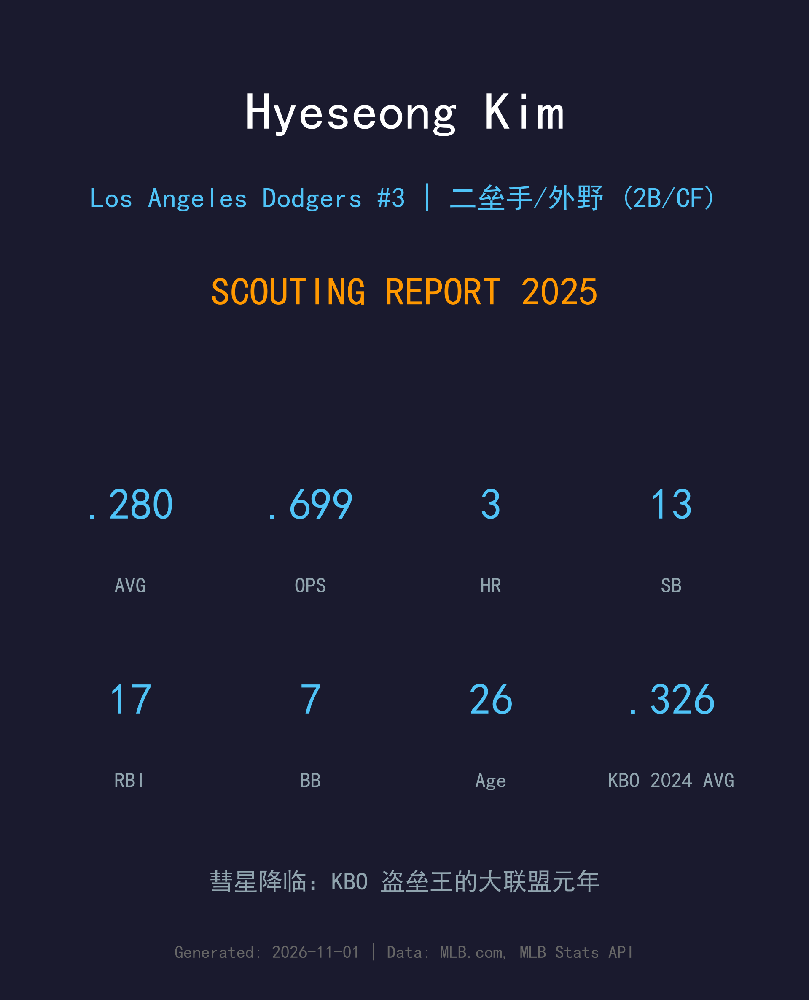
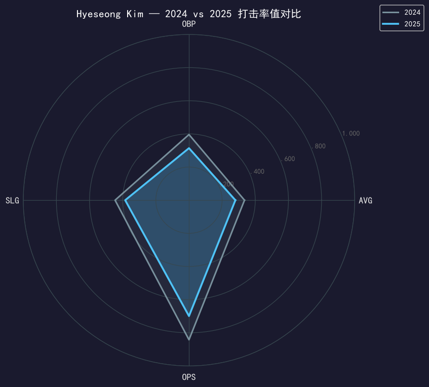
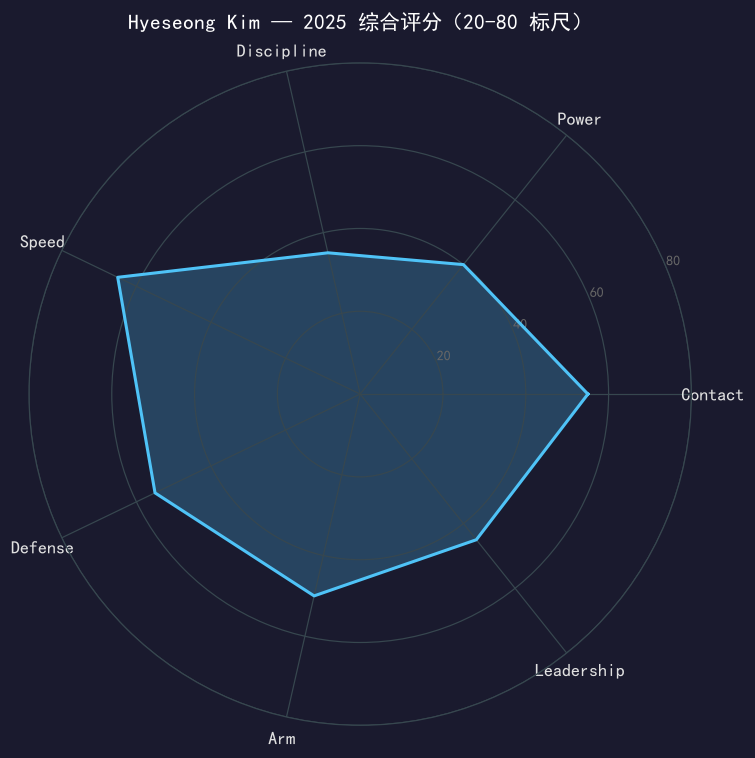

Los Angeles Dodgers #3 | 二垒手/外野 | 左打 | 彗星 · "The Comet"

⚠️ 小样本警告：本报告基于 170 个大联盟打席的旅美元年数据。
金惠成的 MLB 开局让整个韩国棒坛沸腾：5 月 16 日对天使单场 3-for-3，把个人大联盟前 33 个打席的上垒率推到了 .485；整个 5 月他打出 1.058 OPS（48 PA），包括对扬基 18-2 大胜中的单场 4-for-4（含 1 轰 2 打点）。.280 的大联盟首年打击率证明了 KBO 两届安打王的 contact 工具可以跨国翻译。
他 13 次盗垒 14 次尝试（.929 全队第一）、左右开弓守二垒（32 先）中外野（9 先）游击（4 先）——道奇找到了 Rojas 时代的接棒人模板。7 月 29 日左肩滑囊炎让他缺席一个月，9 月 1 日回归后在常规赛收官战（9/28 西雅图）轰出 409 英尺逆转两分炮，为赛季写下完美句号。
短板同样清楚：保送率仅 4.1%，他的上垒几乎全部依赖击球；power 输出（3 轰 .385 SLG）离 KBO 生涯均值也有差距。但 26 岁的他第一年就把「未来主战二垒」的答卷交了——剩下的都是加分题。
八个赛季从高中状元成长为联盟门面：2021 年以 46 盗（50 次尝试）拿下 KBO 盗垒王；2023 年 .335/.396/.446、186 安打、104 得分；2024 年 .326 写下生涯新高（11 轰 30 盗 75 打点均为生涯纪录）。2024 年 11 月经入札制度赴美，道奇 2025 年 1 月 3 日签下四年合约。
5/3 亚特兰大完成首秀；5/5 迈阿密首次先发：首安+盗垒+靠大谷全垒打得分+RBI 单局的完美剧本；5/15 对运动家单场 3-for-3、2 保送、4 得分（球队 19-2 大胜）；5/16 再 3-for-3，前 33 PA 上垒率 .485；5 月 OPS 1.058；5/31 对扬基 4-for-4 含全垒打。
常规赛最后一战对水手，第 2 局轰出 409 英尺两分全垒打打破 0-0 僵局，道奇 6-1 锁定胜利——用全季最重的一击结束了被伤病切割的旅美元年。
NLDS 第 4 场 11 局下代跑 Edman 并跑回系列赛晋级分——他在道奇的第一枚冠军戒指上刻着自己的跑垒鞋印。

| 赛季/联盟 | G | PA | AVG | OBP | SLG | OPS | HR | RBI | SB | SO |
|---|---|---|---|---|---|---|---|---|---|---|
| 2023 (KBO) | 137 | - | .335 | .396 | .446 | .842 | 7 | 57 | 25 | - |
| 2025 (MLB) | 71 | 170 | .280 | .314 | .385 | .699 | 3 | 17 | 13 | 52 |
从 KBO 到 MLB 的翻译损耗符合预期：AVG 掉了 55 点，但 .280 在旅美韩国打者的首年里已属上乘（对比前辈们首年多在 .240-.260 区间挣扎）。最大的失落是长打——KBO 时期靠 gap power 与盗垒组合吃饭的打法，在大联盟被更强的外野防守压制；3 轰 13 盗的产量结构说明他还在「contact + speed」的安全区，尚未开发出 MLB 级别的 power 威胁。对左投 .952 OPS（8-for-21）是他隐藏的优势武器。
金惠成的挥棒是 KBO 养成的教科书式「快速出棒 + 全场使用」结构，节奏感极佳。大联盟投手的球速比他习惯的快一档，但 20.4% 左右的三振率与 .280 AVG 证明他的 hand-eye coordination 是 international 级别的。前 33 个打席 .485 OBP 的爆炸开局，是近年亚洲打者旅美的最佳首秀之一。
7 次保送、4.1% 保送率——这个数字在 KBO 就很低，到大联盟被放大成结构性短板。.314 的 OBP 几乎全靠 AVG 单腿支撑，一旦手感降温上垒就会断流。好消息是 KBO 后期他的 BB% 已在缓慢爬升（2023 年约 8%），说明 eye 有进化空间；这决定了他未来是「例行赛 2 号打者」还是「9 号搅局者」。
13 盗 14 尝试、盗垒成功率 .929 全队第一——「彗星」的跑垒是他最即插即用的 MLB 武器。守备端 32 场二垒先发是他未来五年的主战场，中外野 9 场则是道奇给他的增值选项；Rojas 在场上的每一天都是他的大师课。
从 3A 开幕（3 月 12 日被下放）到 5 月 3 日首秀，他等了两个月；从 5 月的 1.058 OPS 到 7 月 29 日的左肩滑囊炎，他只享受了两个月；9 月回归后 12 场 .269，收官战 409 英尺全垒打为这一年画上惊叹号。七十一出赛、.280、13 盗——被伤病切割的元年成绩单，依然配得上一句「翻译成功」。

旅美元年翻译成功；选球进化决定他是搅局者还是主将
B 级 / 上升期多功能内野（小样本警告）
道奇 2025 季后赛之路：外卡轮 2-0 红人 → NLDS 3-1 费城人 → NLCS 4-0 酿酒人 → 世界大赛 4-3 多伦多蓝鸟（二连霸）。
金惠成的四年合约（2025-2028）给了他和球队足够的磨合期。2026 年的他面临清晰的晋升路径：Rojas 的合同选项年将是他接管二垒先发的窗口，而 Edman 的多功能性反而会成为他的掩护而非障碍。如果保送率能爬到 8%，他会从「9 号搅局彗星」变成「1-2 号 table setter」——那才是他 KBO 版本的完全体。
短期：站稳二垒轮换，出赛冲到 110+ 场
中期：保送率 8%+，成为道奇固定 leadoff/9 号人选
长期：道奇二游的多年答案，亚洲打者旅美的新一代标杆
金惠成（Kim Hye-seong）出生于韩国高阳市，高中时期拿下全国最佳打者荣誉（Lee Young-min Batting Award），2017 年以高中生身份直接加盟 KBO 的 Nexen 英雄队（后改名 Kiwoom）。他的绰号「彗星」（혜성）从那时起伴随左右——进球场音乐用的是 Younha 的《Comet (혜성)》，每次踏上打击区，整个球场都知道彗星要来了。
八个 KBO 赛季，他从一个高中毕业生成长为联盟最全面的内野手：2021 年 46 盗拿下盗垒王；2023 年 .335 打击率 + 186 安打 + 104 得分；2024 年以生涯最佳赛季（.326、11 轰、30 盗、75 打点）结束韩国篇章。2024 年 11 月，他通过入札制度挑战大联盟，道奇在 2025 年 1 月 3 日将他签下。
从 KBO 的彗星到洛杉矶的新秀，他的旅美元年写满了故事：首秀之夜靠大谷的全垒打跑回得分、18-2 血洗扬基之夜的 4-for-4、收官战的 409 英尺全垒打，以及 NLDS 晋级跑。道奇的韩国 lineage（从朴赞浩到柳贤振）又多了一颗正在升空的彗星。